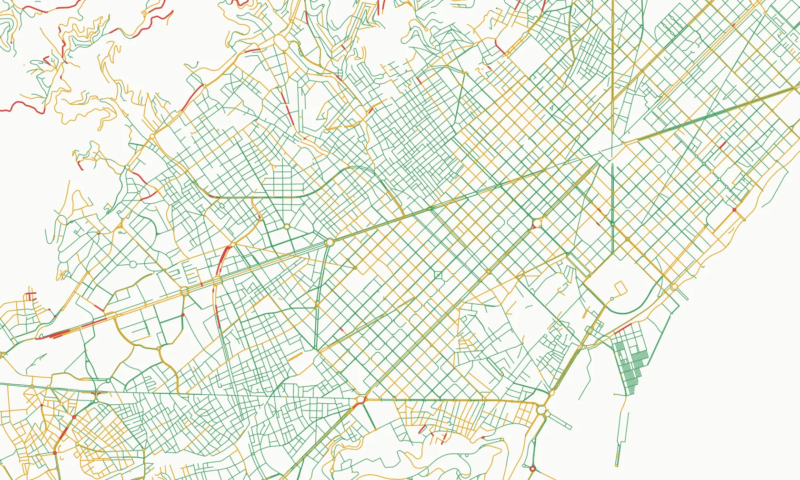

Predict cycling risk on every street, then test your plan before you build it.
Crash data tells you where people got hurt last year. We predict cycling risk for every street segment in your city from road data, at a fraction of the cost of a survey. Our planning simulator then shows what any change does to the whole network: which calm areas it joins up, how much safer everyday trips get, and how far your city’s pedalability moves. Your budget goes where it does the most.
Works with the World Bank on cycling intelligence for cities · Same model across 300 European cities

Test any change before a single sign goes up
Edit the network the way you plan to build it, and the simulator re-scores the whole city. A short link that joins two calm areas can do more than a long lane that joins nothing. The simulator shows you which is which.
Your network today
Two calm areas, cut apart by one busy road.
Draw the change
Add the lane or crossing you are considering, or close a street to through traffic.
See the whole-city effect
Risk on every street, your Network, Commute and Island Effect scores, and the likely range, before you build.
Compare options side by side, take the strongest one to council with its numbers, and re-run it when the plan changes.
The index is now public. It is the same model, run on 300 cities.
The Pedalability Index: Cycling Risk applies our street model to 300 European cities and scores each on three things residents feel every day. Journalists and councillors may ask where your city stands. Every city gets a likely rank range from 2,000 recalculations, so small gaps are never over-read.
The Network
The risk of every street in the city, weighted by its length.
The Commute
How risky an everyday trip is, even when people take the safest route. We test 210 trips per city.
The Island Effect
How far people get on calm streets before a busy road stops them.
Look up your city’s rank → Then book a briefing and we’ll show you what holds it back and which changes would move it most.
You know where you want to build. Council wants proof.
- Crash data arrives late and counts only what has already gone wrong.
- Bike counts show where people already ride, not the streets they avoid.
- A lane that joins nothing up is hard to defend at the next budget round. Council wants a reason for this link, this year.
- Until a scheme is built, nobody can show what it will change across the network.
We score the roads themselves, so you have evidence for every street today, including the ones nobody dares ride yet. And you can simulate a plan before you commit the budget.
What you get
| Offer | What it is | Price |
|---|---|---|
| Briefing | 20 minutes, no obligation. Your city’s rank, what holds it back, and three streets worth a closer look. | Free |
| Street Risk Review | A street-level risk map, the barrier links that cut your calm areas apart, one planned change run through the simulator, a peer-city comparison, and a short report ready for council. | On request |
| Pilot | A Review plus your whole plan run through the simulator, and a before-and-after check on a scheme you are building, so you can show council what it changed. | On request |
| Planning Platform | The simulator for your team, to test as many options as you like, plus a yearly re-score of your network so every budget round starts with evidence of progress. | On request |
Already working with a consultancy? We deliver through them. See how we work with consultancies →
Safer streets, fewer serious injuries
riders killed or seriously injured per bike trip, for every 10 index points, across 18 cities.
- Cities with safer streets see fewer serious cycling injuries. Across 18 European cities with bike counters, every 10 index points goes with about 22% fewer riders killed or seriously injured per bike trip.
- On the streets we rate High risk, serious injuries are more than twice as likely per passage as on the streets we rate Safer, across 2,034 counting sites in five countries. How the street score works →
- Small print: the city link is an association between countries, not proof of cause, and is too weak to detect within a country. The street model predicts injury severity, not crash frequency. City results are open data under CC BY 4.0. Method: preprint with DOI 10.5281/zenodo.23507613, not yet peer reviewed.
Questions cities ask
What changes can the simulator test?
Any change you can draw on the street network, such as a new or upgraded lane or a street closed to through traffic. We re-run the model and show the effect on every street, on your three index scores and on the likely range.
OpenStreetMap is incomplete in our city. Does that skew the result?
We checked 45 cities against official bike-infrastructure figures. OpenStreetMap was typically close, and where it fell short, adding the missing lanes moved no city out of its likely rank range. In a Review we correct your network by hand first.
Is the method peer reviewed?
Not yet. It is a public preprint with a DOI, the city data is open and the factors are published with the direction each one pushes. The exact weights stay private, because they are the core of the product.
How much should we trust a single rank?
Trust the tier, not the decimal. Cities a few places apart are effectively tied, which is why we publish a likely range for every city.
We already work with a consultancy.
Good. We work through consultancies and can supply the risk layer for their report. Partner details →
What about personal data?
City work uses road data. Anything drawn from app riders is aggregated and anonymised, and personal data is never sold. Privacy policy.
Free Demo and Audit
Tell us your city and what’s coming up: a budget round, a cycling plan, a question from council. Victor Rotariu, the founder, built the road model behind the index and runs every briefing himself, in English or Romanian. It’s free and there’s no obligation. You leave with three streets worth a closer look. Send the short form and you can pick a time for a call straight away.
Prefer email? victor@defensivepedal.com
© 2026 Defensive Pedal SRL · Home · Consultancies · Pedalability Index: Cycling Risk · Methodology · Privacy · Terms